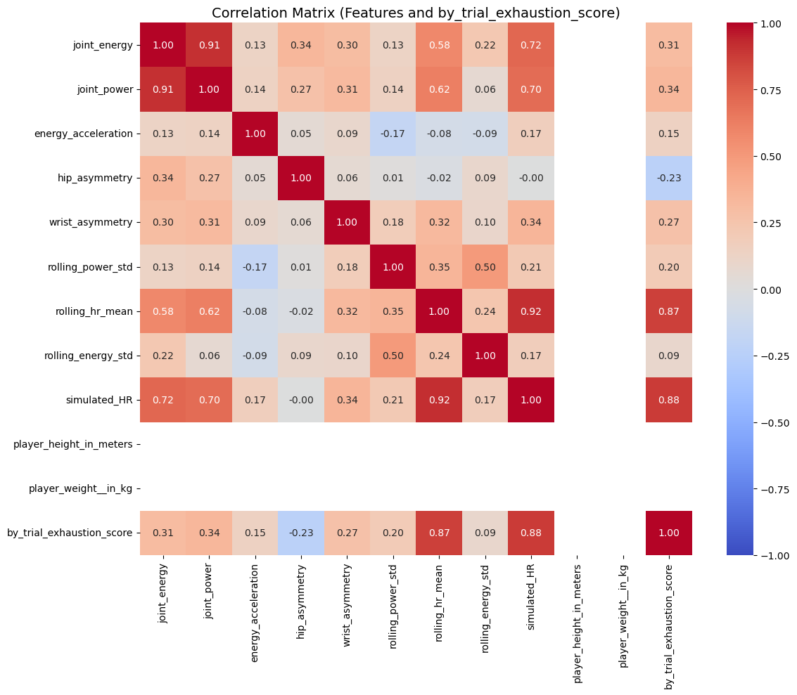

Capstone Project: Modeling Fatigue and Injury Risk in Athletic Movements like Basketball Shooting
Introduction
Fatigue and injury risk modeling have become pivotal in sports analytics, particularly for basketball players. Predicting fatigue levels and assessing injury risk help in optimizing training programs and enhancing athlete longevity. Long Short-Term Memory (LSTM) networks, a type of Recurrent Neural Network (RNN), offer significant potential due to their ability to capture temporal patterns and sequential dependencies, critical in physiological and biomechanical data analysis.
Recent developments have showcased that fatigue accumulation can directly impact injury susceptibility, highlighting the importance of accurately modeling temporal fatigue progression. This project aims to leverage LSTM models to effectively forecast fatigue levels and predict joint injury risks in basketball players, contributing valuable insights for injury prevention strategies and optimized athletic performance.
Previous research on LSTM’s efficacy in fatigue modeling forms the basis of our methodological approach, emphasizing the use of biomechanical and simulated physiological data.
Athlete Burnout: Research has shown that burnout is influenced by multiple factors (e.g., stress, training load, support systems) that vary among athletes. Customizing training and recovery protocols based on individual warning signs may mitigate injury risks.
Fatigue Data Collection: Detailed datasets have been published to capture muscle activity, motion capture data, and self-reported fatigue levels during shoulder rotations. These resources serve as a foundation for building predictive algorithms.
Methodological Advances: Recent studies have applied neural network architectures to model fatigue—such as a fully-connected network for predicting crack growth in metals [DOI: 10.1016/j.engfracmech.2020.107402]—and used combined physical and physiological workload metrics to forecast injury risk in professional soccer players [DOI: 10.52082/jssm.2024.537].
Methods
LSTM (Long Short-Term Memory) Networks
Long Short-Term Memory (LSTM) networks are a specialized type of Recurrent Neural Network (RNN) designed to overcome the vanishing gradient problem that typically hinders standard RNNs when modeling long-term dependencies. Unlike traditional RNNs, LSTMs utilize gating mechanisms to selectively retain or discard information over sequences.
The core components of an LSTM cell include:
Forget Gate:
\[f_t = \sigma(W_f \cdot [h_{t-1}, x_t] + b_f)\]
Determines which information to remove from the cell state.Input Gate:
\[i_t = \sigma(W_i \cdot [h_{t-1}, x_t] + b_i)\]
\[\tilde{C}_t = \tanh(W_C \cdot [h_{t-1}, x_t] + b_C)\]
Decides which new candidate values to add to the cell state.Cell State Update:
\[C_t = f_t \odot C_{t-1} + i_t \odot \tilde{C}_t\]Output Gate:
\[o_t = \sigma(W_o \cdot [h_{t-1}, x_t] + b_o)\]
\[h_t = o_t \odot \tanh(C_t)\]
Controls the information output to the next hidden state.
Here, ( W ) and ( b ) represent weights and biases, respectively, ( ) is the sigmoid function, and ( ) is element-wise multiplication.
Compared to standard RNNs, LSTMs are especially effective in handling data with temporal correlations—making them suitable for modeling fatigue progression and injury risk in sequential biomechanical and physiological data.
Preprocessing Options:
Sequencing into categories of different lengths causing us to test DTW vs Pad vs set_window to understand what would be the best option for handling this data
Data Description
The dataset utilized in this project comprises biomechanical and simulated physiological data collected from a Basketball Player from SPL Open Biomech dataset. Data was gathered during basketball shooting trials, incorporating joint-level biomechanical metrics and simulated physiological signals.
Key features derived in this project include:
Joint Metrics: Aggregated joint energy and power are computed to serve as primary indicators of physical output.
Simulated Physiological Measures: A simulated heart rate is calculated as a function of mean and joint energy. In addition, “fake body” metrics (sleep quality, sleep duration, resting heart rate, heart rate variability, and stress index) are introduced to mimic wearable sensor data.
Temporal Dynamics: Lag features (e.g., previous trial exhaustion) and rolling statistics (moving averages, volatility measures) capture trends across trials. The trial exhaustion rate is defined as the change in exhaustion per trial.
Asymmetry Features: Differences between left and right joint metrics are measured to detect imbalances that may predispose athletes to injury.
Workout Simulation
To mimic the progression of fatigue:
Workout: Contains the original 125 trials.
- Joint Metrics:
- Joint Energy (Joules, range: 50–250 J)
- Joint Power (Watts, range: 100–1000 W)
- Simulated Physiological Metrics:
- Simulated Heart Rate (beats per minute, range: 60–180 bpm)
- Sleep Quality (index score, range: 0–100)
- Sleep Duration (hours, range: 4–10 hrs)
- Resting Heart Rate (beats per minute, range: 40–70 bpm)
- Heart Rate Variability (milliseconds, range: 20–150 ms)
- Stress Index (index score, range: 0–100)
- Temporal Features:
- Trial Exhaustion Rate (dimensionless, normalized between 0–1)
- Lag and rolling average features derived from trials
- Asymmetry Features:
- Differences between left/right joints (Joules, range: -50 to 50 J)
Analysis and Results
Descriptive Statistics
Descriptive Statistics: Variable Type Mean Std Dev
0 joint_energy float64 1.346318 9.144608e-01
1 joint_power float64 20.153438 1.250285e+01
2 energy_acceleration float64 -11458.531869 1.333065e+05
3 hip_asymmetry float64 0.004024 6.579138e-03
4 wrist_asymmetry float64 0.022392 2.180127e-02
5 rolling_power_std float64 3.349565 3.234210e+00
6 rolling_hr_mean float64 61.079085 5.164486e-01
7 rolling_energy_std float64 0.203486 3.885164e-01
8 simulated_HR float64 61.079297 5.498151e-01
9 player_height_in_meters float64 1.910000 0.000000e+00
10 player_weight__in_kg float64 90.700000 4.263389e-14
11 by_trial_exhaustion_score float64 0.450268 2.666154e-01
12 injury_risk int32 0.274897 4.464764e-01
Min Max 0 0.000000e+00 49.115825
1 0.000000e+00 60.832273
2 -2.189662e+06 0.072830
3 0.000000e+00 0.184738
4 0.000000e+00 0.244317
5 6.141516e-02 17.383747
6 6.009147e+01 63.641281
7 2.190869e-03 19.403572
8 6.000000e+01 75.117490
9 1.910000e+00 1.910000
10 9.070000e+01 90.700000
11 0.000000e+00 1.000000
12 0.000000e+00 1.000000

Correlation matrix for ‘by_trial_exhaustion_score’ with selected features: joint_energy joint_power energy_acceleration
joint_energy 1.000000 0.909506 0.126557
joint_power 0.909506 1.000000 0.138562
energy_acceleration 0.126557 0.138562 1.000000
hip_asymmetry 0.337483 0.271547 0.052571
wrist_asymmetry 0.298441 0.313432 0.088292
rolling_power_std 0.131956 0.144989 -0.173823
rolling_hr_mean 0.580720 0.622465 -0.075317
rolling_energy_std 0.219730 0.063468 -0.085464
simulated_HR 0.721382 0.699768 0.168744
player_height_in_meters NaN NaN NaN
player_weight__in_kg NaN NaN NaN
by_trial_exhaustion_score 0.305779 0.338143 0.145175
hip_asymmetry wrist_asymmetry rolling_power_std \joint_energy 0.337483 0.298441 0.131956
joint_power 0.271547 0.313432 0.144989
energy_acceleration 0.052571 0.088292 -0.173823
hip_asymmetry 1.000000 0.060808 0.013738
wrist_asymmetry 0.060808 1.000000 0.180543
rolling_power_std 0.013738 0.180543 1.000000
rolling_hr_mean -0.023484 0.324528 0.346268
rolling_energy_std 0.092390 0.095367 0.497836
simulated_HR -0.000801 0.343949 0.212884
player_height_in_meters NaN NaN NaN
player_weight__in_kg NaN NaN NaN
by_trial_exhaustion_score -0.232607 0.268138 0.202155
rolling_hr_mean rolling_energy_std simulated_HR \joint_energy 0.580720 0.219730 0.721382
joint_power 0.622465 0.063468 0.699768
energy_acceleration -0.075317 -0.085464 0.168744
hip_asymmetry -0.023484 0.092390 -0.000801
wrist_asymmetry 0.324528 0.095367 0.343949
rolling_power_std 0.346268 0.497836 0.212884
rolling_hr_mean 1.000000 0.238044 0.919149
rolling_energy_std 0.238044 1.000000 0.174079
simulated_HR 0.919149 0.174079 1.000000
player_height_in_meters NaN NaN NaN
player_weight__in_kg NaN NaN NaN
by_trial_exhaustion_score 0.865287 0.088595 0.879951
player_height_in_meters player_weight__in_kg \joint_energy NaN NaN
joint_power NaN NaN
energy_acceleration NaN NaN
hip_asymmetry NaN NaN
wrist_asymmetry NaN NaN
rolling_power_std NaN NaN
rolling_hr_mean NaN NaN
rolling_energy_std NaN NaN
simulated_HR NaN NaN
player_height_in_meters NaN NaN
player_weight__in_kg NaN NaN
by_trial_exhaustion_score NaN NaN
by_trial_exhaustion_score joint_energy 0.305779
joint_power 0.338143
energy_acceleration 0.145175
hip_asymmetry -0.232607
wrist_asymmetry 0.268138
rolling_power_std 0.202155
rolling_hr_mean 0.865287
rolling_energy_std 0.088595
simulated_HR 0.879951
player_height_in_meters NaN
player_weight__in_kg NaN
by_trial_exhaustion_score 1.000000
Correlation matrix for ‘injury_risk’ with selected features: joint_energy joint_power energy_acceleration
joint_energy 1.000000 0.909506 0.126557
joint_power 0.909506 1.000000 0.138562
energy_acceleration 0.126557 0.138562 1.000000
hip_asymmetry 0.337483 0.271547 0.052571
wrist_asymmetry 0.298441 0.313432 0.088292
rolling_power_std 0.131956 0.144989 -0.173823
rolling_hr_mean 0.580720 0.622465 -0.075317
rolling_energy_std 0.219730 0.063468 -0.085464
simulated_HR 0.721382 0.699768 0.168744
player_height_in_meters NaN NaN NaN
player_weight__in_kg NaN NaN NaN
injury_risk 0.366639 0.404424 -0.139607
hip_asymmetry wrist_asymmetry rolling_power_std \joint_energy 0.337483 0.298441 0.131956
joint_power 0.271547 0.313432 0.144989
energy_acceleration 0.052571 0.088292 -0.173823
hip_asymmetry 1.000000 0.060808 0.013738
wrist_asymmetry 0.060808 1.000000 0.180543
rolling_power_std 0.013738 0.180543 1.000000
rolling_hr_mean -0.023484 0.324528 0.346268
rolling_energy_std 0.092390 0.095367 0.497836
simulated_HR -0.000801 0.343949 0.212884
player_height_in_meters NaN NaN NaN
player_weight__in_kg NaN NaN NaN
injury_risk 0.077084 0.236727 0.365599
rolling_hr_mean rolling_energy_std simulated_HR \joint_energy 0.580720 0.219730 0.721382
joint_power 0.622465 0.063468 0.699768
energy_acceleration -0.075317 -0.085464 0.168744
hip_asymmetry -0.023484 0.092390 -0.000801
wrist_asymmetry 0.324528 0.095367 0.343949
rolling_power_std 0.346268 0.497836 0.212884
rolling_hr_mean 1.000000 0.238044 0.919149
rolling_energy_std 0.238044 1.000000 0.174079
simulated_HR 0.919149 0.174079 1.000000
player_height_in_meters NaN NaN NaN
player_weight__in_kg NaN NaN NaN
injury_risk 0.652248 0.169955 0.543222
player_height_in_meters player_weight__in_kg \joint_energy NaN NaN
joint_power NaN NaN
energy_acceleration NaN NaN
hip_asymmetry NaN NaN
wrist_asymmetry NaN NaN
rolling_power_std NaN NaN
rolling_hr_mean NaN NaN
rolling_energy_std NaN NaN
simulated_HR NaN NaN
player_height_in_meters NaN NaN
player_weight__in_kg NaN NaN
injury_risk NaN NaN
injury_risk joint_energy 0.366639
joint_power 0.404424
energy_acceleration -0.139607
hip_asymmetry 0.077084
wrist_asymmetry 0.236727
rolling_power_std 0.365599
rolling_hr_mean 0.652248
rolling_energy_std 0.169955
simulated_HR 0.543222
player_height_in_meters NaN
player_weight__in_kg NaN
injury_risk 1.000000
Feature Importance for target ‘by_trial_exhaustion_score’: Feature Perm_Importance SHAP_Importance 8 simulated_HR 1.386061 0.199147 6 rolling_hr_mean 0.454274 0.077322 0 joint_energy 0.109296 0.045438 1 joint_power 0.031813 0.023560 2 energy_acceleration 0.003993 0.002480 4 wrist_asymmetry 0.001665 0.002465 7 rolling_energy_std 0.000693 0.001707 5 rolling_power_std 0.000639 0.002280 3 hip_asymmetry 0.000099 0.000205 9 player_height_in_meters 0.000000 0.000000 10 player_weight__in_kg 0.000000 0.000000
Feature Importance for target ‘injury_risk’: Feature Perm_Importance SHAP_Importance 6 rolling_hr_mean 1.079943 0.278289 8 simulated_HR 0.541816 0.082835 0 joint_energy 0.154789 0.028769 1 joint_power 0.145825 0.028232 2 energy_acceleration 0.072137 0.022768 5 rolling_power_std 0.056597 0.023569 7 rolling_energy_std 0.042963 0.015189 4 wrist_asymmetry 0.011434 0.004545 3 hip_asymmetry 0.002956 0.003068 9 player_height_in_meters 0.000000 0.000000 10 player_weight__in_kg 0.000000 0.000000
Data Visualizations
- Histogram distributions for joint metrics.
- Scatter plots showing correlation between physiological metrics and fatigue rates.
- Temporal trend lines visualizing progression across trials.
Modeling and Results
Steps: Explain your data preprocessing and cleaning steps.
Present your key findings in a clear and concise manner.
Use visuals to support your claims.
Tell a story about what the data reveals.work below—————-
Predictive Modeling Pipelines Pipeline 1: Regression for Predicting Trial Exhaustion Rate
Input Features: Aggregated joint metrics, simulated physiological features, and temporal features.
Model: A baseline linear regression model is used, with future plans to incorporate Random Forests, Gradient Boosting, or LSTM networks.
Evaluation: Model performance is assessed using Mean Absolute Error (MAE), Root Mean Squared Error (RMSE), and R², along with visualizations comparing predicted versus actual exhaustion rates.
Pipeline 2: Classification for Predicting Joint Injury Risk
Input Features: Joint-specific metrics, asymmetry measurements, and cumulative load indicators.
Labeling: Trials are classified as high injury risk if a rolling sum of joint stress exceeds a threshold (e.g., the 75th percentile).
Model: Initially, logistic regression or decision tree classifiers are employed. Future work may involve Random Forests or neural network-based methods.
Evaluation: Metrics such as accuracy, precision, recall, F1-score, and ROC-AUC are used, supplemented by feature importance analyses using SHAP values.
Integration and Modularity
Both pipelines share common preprocessing and feature engineering modules, ensuring that the workflow is modular and reproducible. Visualization tools—including histograms, correlation matrices, and temporal trend plots—are used throughout the analysis to validate each transformation step. Experimental Results
The LSTM-based regression model for fatigue prediction demonstrated promising results:
MSE: 0.00596
MAE: 0.01762
R² Score: 0.91808
Similarly, the injury risk classifier achieved strong performance:
Overall Accuracy: 98.16%
Precision: 93.84%
Recall: 99.77%
F1 Score: 96.72%
Conclusion
Steps: Summarize your key findings.
Discuss the implications of your results.—–work below:
Joint-specific models yielded varying metrics, reflecting the inherent complexity of localized biomechanical data. Discussion
This project illustrates the successful application of deep learning to model fatigue and predict injury risk in a real-world sports setting. Key challenges included managing the variability in biomechanical signals and optimizing model performance through careful feature engineering. The integration of temporal dynamics and asymmetry features was critical in capturing the underlying physiological responses. Future work may explore attention mechanisms or hybrid architectures to further refine predictive accuracy. Conclusion
By combining real athlete data with simulated physiological metrics, this capstone project provides a novel approach to predicting fatigue and injury risks in basketball players. The dual-pipeline strategy (regression and classification) along with modular integration of preprocessing and feature engineering modules establishes a robust framework that is transparent, reproducible, and adaptable for future research and practical deployment. References
Resources
DataCamp Tutorial: Introduction to SHAP Values for Machine Learning Interpretability
DataCamp Tutorial: Mastering Bayesian Optimization in Data Science
Fatigue Analysis Study, DOI: 10.1016/j.engfracmech.2020.107402
Injury Prediction Study, DOI: 10.52082/jssm.2024.537
Nature Articles:
Factors Leading to Athlete Burnout
Dataset for Fatigue Analysis during Shoulder RotationsEXAMPLE:
Writing a great story for data science projects - spring 2025
This is a Report Template Quarto Author
Students names (Advisor: Dr. Cohen) Published
January 14, 2025
Slides: slides.html ( Go to slides.qmd to edit) Important
Remember: Your goal is to make your audience understand and care about your findings. By crafting a compelling story, you can effectively communicate the value of your data science project.
Carefully read this template since it has instructions and tips to writing! Introduction
The introduction should:
Develop a storyline that captures attention and maintains interest.
Your audience is your peers
Clearly state the problem or question you’re addressing.
Introduce why it is relevant needs.
Provide an overview of your approach.Example of writing including citing references:
This is an introduction to ….. regression, which is a non-parametric estimator that estimates the conditional expectation of two variables which is random. The goal of a kernel regression is to discover the non-linear relationship between two random variables. To discover the non-linear relationship, kernel estimator or kernel smoothing is the main method to estimate the curve for non-parametric statistics. In kernel estimator, weight function is known as kernel function (Efromovich 2008). Cite this paper (Bro and Smilde 2014). The GEE (Wang 2014). The PCA (Daffertshofer et al. 2004). Topology can be used in machine learning (Adams and Moy 2021)
This is my work and I want to add more work… Methods
Detail the models or algorithms used.
Justify your choices based on the problem and data.The common non-parametric regression model is , where can be defined as the sum of the regression function value for . Here is unknown and some errors. With the help of this definition, we can create the estimation for local averaging i.e. can be estimated with the product of average and is near to
. In other words, this means that we are discovering the line through the data points with the help of surrounding data points. The estimation formula is printed below (R Core Team 2019):
is the sum of weights that belongs to all real numbers. Weights are positive numbers and small if is far from
.
Another equation:
Analysis and Results Data Exploration and Visualization
Describe your data sources and collection process.
Present initial findings and insights through visualizations.
Highlight unexpected patterns or anomalies.A study was conducted to determine how… Code
Code
state abb region population total Alabama AL South 4779736 135 Alaska AK West 710231 19 Arizona AZ West 6392017 232 Arkansas AR South 2915918 93 California CA West 37253956 1257 Colorado CO West 5029196 65 Code
Modeling and Results
Explain your data preprocessing and cleaning steps.
Present your key findings in a clear and concise manner.
Use visuals to support your claims.
Tell a story about what the data reveals.Conclusion
Summarize your key findings.
Discuss the implications of your results.